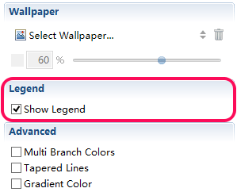
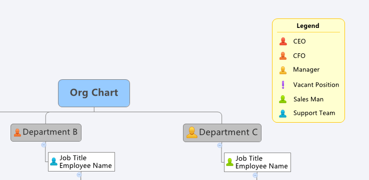

図例
マーカーより良い表現と見栄えを良くするために使用されます。マップ内で、マーカー、図例、フローティング ボックスの誤解を避けるために、マーカーの意味を記述するために使用します。
- メニューから[表示]→[プロパティ]をクリックして、プロパティビューを開きます。
- マインド マップ上の空白部分をクリックし、プロパティビューの「図例を表示します」のチェックボックスをチェックします。
- マウスをドラッグし、マインド マップ上の任意の場所をクリックします。
- 図例上のテキストをダブルクリックし、それを直接変更します。


注: マインド マップにマーカーを追加すると、マーカーが自動的に図例に表示されます。もちろん、マインドマップからマーカーを削除した場合は図例から消えます。